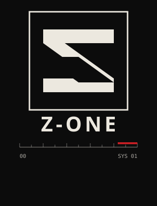

Conectividade · Inteligência artificial
Serviços de TI e automação
orientados por IA
A z-one desenvolve produtos digitais e fluxos automatizados, unindo engenharia de software e agentes de IA — com o time z-team orquestrado via MCP.
Sobre
A z-one é uma empresa de serviços de tecnologia da informação e automação com inteligência artificial, liderada por Hil Zapf (Hilderney). O foco é construir software e processos que conectam pessoas, dados e sistemas — com precisão de engenharia e linguagem visual minimalista.
Projetos e conteúdo são coordenados em um espaço de trabalho unificado; o desenvolvimento com agentes é conduzido pelo z-team, com observabilidade e protocolo MCP (Model Context Protocol).
Projetos
-
Devotio
Aplicativo devocional em desenvolvimento.
-
Pac-Man game
Projeto de jogo.
-
Ikarus Eternal Horizon
Webgame 3D em desenvolvimento.
-
Cubu Dash
Jogo desenvolvido com Godot.
-
z-team
Time de desenvolvimento com IA orquestrado via MCP, com observabilidade dos fluxos de agentes.
github.com/hilderney/dev-team-orchestrator-mcp -
Em breve
Bellspretty
Projeto co-criado — detalhes em breve.
-
Em breve
Homeschooling
Maya Home Schooling — projeto co-criado.
Atuação
Não há um catálogo rígido de serviços: a z-one atua na construção de produtos e automações com IA, do desenho à entrega, com especificação clara e ciclos iterativos.
- Desenvolvimento de software e produtos digitais
- Automação de fluxos com agentes e integrações
- Orquestração de times de IA (z-team) com MCP e observabilidade
Presença
- Instagram @zeedashone
- Fundador Hilderney no LinkedIn